Bavaria Autumn-Winter Bespoke Dossier · 2 Adults (Tak Hin Lee & Yun Yu Tang)
Munich & Alpine Bavaria Trip Planner (13–19 Nov 2026)
Tailored for two Hong Kong first-timers to Germany: verified TGV rail logistics from Colmar, Timehouse Schwabing apartment base, Neuschwanstein Castle, Dachau Memorial, Residenz Kaiserhof Christmas Village, Bavarian delicacies, wooden-barrel beer halls, artisan bakeries, Franconian wine, antiques & Leica/vintage cameras.
Inbound Rail · Friday, 13 November 2026
16:45 Colmar → 17:12 Strasbourg · TGV INOUI 2362 (1st Class, Coach 13, Seats 308 & 307). 34 min transfer at Strasbourg. 17:46 Strasbourg → 21:46 München Hbf · TGV INOUI 9577 (1st Class, Coach 13 Lower Deck, Seats 304 & 305). Booking: NZM3KL.
Base Hotel · Timehouse Munich (Schwabing)
Leopoldstraße 204a, 80804 Munich · U6 Nordfriedhof & U6 Alte Heide.
Equipped with a full designer kitchen, furnished loggia & REWE supermarket nearby. Reception open 06:30–22:30.
Outbound Flight · Thursday, 19 November 2026
10:00 AM Flight departing Munich Airport (MUC).
Direct Lufthansa Express Bus from Schwabing / Nordfriedhof to MUC Terminal 2 in 25 minutes (06:33 or 06:53 departure).
CRITICAL ARRIVAL & TRANSIT ALERTS:
1) Timehouse Reception Closes at 22:30: Your TGV 9577 arrives at München Hbf at 21:46 on Friday 13 Nov 2026. Email wecare@timehouse.de or call +49 89 230 200 00 in advance to request your 24/7 Keybox Code in case of train delay.
2) Mandatory SNCF Luggage Tags: Label all suitcases with name/phone before boarding at Colmar (boarding closes 2 mins before 16:45).
3) Outdated Bus_78.pdf Warning: The Bus_78.pdf file in your trip folder is from 2012 and is outdated. Today RVA Bus 73/78 at Füssen Bahnhof connects dynamically with arriving regional trains.
4) U3/U6 November 2026 Construction Alert: Due to U3/U6 renovation works at Poccistraße/Goetheplatz (southern branch), north-to-center rides from U6 Nordfriedhof / Alte Heide to Odeonsplatz & Marienplatz run normally, but transfer at Sendlinger Tor/Marienplatz if heading south.
VERIFIED ROUTE & OPENING-HOURS AUDIT (4 REAL-WORLD TRAPS FIXED):
• Fix #1 — Foto Dinkel is Closed on Saturdays: Pro dealer Foto Dinkel (Landwehrstr. 6) is open Mon–Fri 09:00–17:30 (Closed Sat/Sun), so it is scheduled on Monday 16 Nov (15:00) right when your S2 train returns from Dachau to Hbf/Hackerbrücke. Meanwhile, Leica Store & Galerie Maffeistraße (Sat 10:00–18:00) and merged Calumet / Foto-Video Sauter (Sonnenstr. 26, Sat 10:00–19:00) are visited on Saturday 14 Nov.
• Fix #2 — Haxnbauer Reopened at New Address (Im Tal 38): Haxnbauer's old Sparkassenstraße site closed; Kuffler reopened Haxnbauer at Im Tal 38 (2 mins walk from Marienplatz & Schneider Bräuhaus).
• Fix #3 — Julius Brantner's Saturday-Only 54-Layer Croissant:Julius Brantner Brothandwerk (Adalbertstr. 25, closed Sun/Mon) only bakes its famous 54-layer hand-touriertes Butter Croissant & Sourdough Baguette on Fridays & Saturdays. It is placed at 09:15 on Saturday 14 Nov—a direct 8-minute U6 ride from your hotel (`Nordfriedhof` → `Universität`) on the way into the Old Town!
• Fix #4 — Zero Morning Zig-Zag on Saturday 14 Nov: Instead of rushing across town at 08:30 after Friday's 22:30 arrival, Saturday flows in a straight line down the U6 (`Nordfriedhof` → `Universität` → `Marienplatz`), keeping the Saturday Flohmarkt (Olympiapark / Daglfing) as an optional early-bird swap.
Leg 1: Berlin Itinerary (Thu 5 Nov 06:00 AM – Sun 8 Nov 20:52 Sleeper) · Base: Karlito Apartmenthaus
Verified Base Hotel (#59 on Your List!):Karlito Apartmenthaus (Linienstraße 60, 10119 Berlin-Mitte, U2 Rosa-Luxemburg-Platz). Non-Negotiables Locked In:#48 Mampe Berlin (Thu 5 Nov at 16:30 right before BRLO Brwhouse), #14 Fleischerei Domke (Fri 6 Nov at 16:45 when its hot butcher counter is open until 18:00!), and #63 Berlin Zoological Garden (Sat 7 Nov 09:00–13:30). 1:1 Map Alignment Guarantee: Every single stop in the 4-day written schedule below has its exact numbered pin on the map above, and omitted pins are separated into the "Show Omitted Pins" filter so they never clutter your daily route lines.
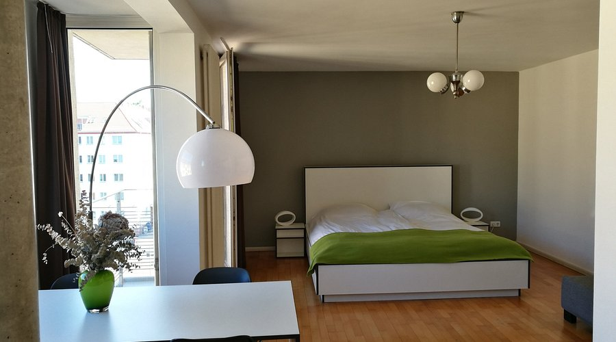
Your Berlin Base · List #59U2 Rosa-Luxemburg-Platz
Airport Transfer (Thu 5 Nov 06:00 AM): Take FEX / RE8 from BER Airport to Alexanderplatz (~30 mins), then walk 9 mins (or 1 stop on U2 to Rosa-Luxemburg-Platz) to Linienstraße 60. Walk 3 mins out your front door to #45 Zeit für Brot and 5 mins to #04 FOTOIMPEX!
• #14 Fleischerei Domke (Warschauer Str. 64) closes at 14:00 on Saturdays (and is closed Sundays), while Mon–Fri it stays open until 18:00! Putting Friedrichshain & Domke on Friday 6 Nov afternoon means you get both a full Saturday morning at #63 Berlin Zoo AND a hot butcher feast (Eisbein, Schnitzel, Bouletten) at Domke!
• #48 Mampe Berlin (Am Tempelhofer Berg 6, open Thu–Sat 12:00–18:00) sits just 12 mins walk from #57 BRLO Brwhouse—pairing them on Thursday 5 Nov (16:30 Mampe → 18:30 BRLO) is a seamless 1-line U2 trip!
4-Day Berlin Schedule (100% 1:1 Aligned with Map Pins)
Thu 5 Nov · Day 1 (6 Map Pins)
06:00 AM BER Arrival → Karlito (#59) → Zeit für Brot (#45) → WWII History Core → Mampe Berlin (#48) → BRLO Brwhouse (#57):
• Pin 1 — ★ #59 Karlito Apartmenthaus (07:30 Bag Drop): Drop luggage at Linienstraße 60.
• Pin 2 — ★ #45 Zeit für Brot (08:15 Breakfast): Walk 3 mins to Alte Schönhauser Str. 4 (`nice 包包`) for warm organic Zimtschnecken.
• Pin 3 — Topography of Terror (10:00–11:45): Ride U2 to Potsdamer Platz for your priority WWII Gestapo/SS headquarters exhibition.
• Pin 4 — Holocaust Memorial, Brandenburg Gate & Reichstag (12:00–14:00): Walk north through the Memorial to the Murdered Jews of Europe and Brandenburg Gate to the Reichstag, then return to Karlito (#59) for check-in & a post-flight rest (14:15–16:00).
• Pin 5 — ★ #48 Mampe Berlin (16:30–18:00 · NON-NEGOTIABLE MUST-GO): Take U2/U6 to Platz der Luftbrücke (`Am Tempelhofer Berg 6`, open Thu–Sat 12:00–18:00). Visit Berlin's oldest 1831 spirits manufactory inside the historic brick brewery courtyard to taste & buy elephant-label Halb & Halb bitter-orange herbal schnaps, Elefantenkümmel & Kreuzberg Gin!
• Pin 6 — ★ #57 BRLO Brwhouse (18:30–21:30 Dinner): Walk 12 mins (or 1 stop to Gleisdreieck) to Schöneberger Str. 16 (`Brewery tour & beer garden!`) for craft beer flights & smoked meats/vegetables, then take U2 straight back to Karlito.
Fri 6 Nov · Day 2 (11 Map Pins)
Analog Camera Mecca (#05 Safelight + #04 FOTOIMPEX) + Mitte Courtyards (#46 & #47) → Friedrichshain Feast at #14 Fleischerei Domke, #12 Silo, #13 Avci, #19 RAW & #21 East Side Gallery:
• Pin 1 — ★ #59 Karlito Apartmenthaus (Start): Leisurely morning in Mitte.
• Pin 2 — ★ #05 Safelight Berlin (12:00–12:50): Hop 2 U2 stops north to Schönhauser Allee (Schivelbeiner Str. 9, open Tue–Sat 12:00–19:00; closed Sun/Mon) for indie film cameras & analog stocks.
• Pin 3 — ★ #04 FOTOIMPEX GmbH (13:15–14:15): Ride U2 back to Alte Schönhauser Str. 32B (opens 12:00) for Europe's #1 analog film & darkroom flagship.
• Pin 4 — ★ #46 Hackesche Höfe (14:20–15:00): Walk 4 mins to Rosenthaler Str. 40 to explore the 8 restored Jugendstil courtyards.
• Pin 5 — ★ #47 Rosenthaler Str. 39 / Haus Schwarzenberg (15:00–15:30): Step next door into the gritty street-art alley (Otto Weidt Workshop for the Blind Museum & Monsterkabinett).
• Pin 6 — ★ #12 Silo Coffee (15:50–16:25 Coffee): Take S-Bahn from Hackescher Markt to Ostkreuz / Warschauer Str. for afternoon specialty coffee at Gabriel-Max-Str. 4.
• Pin 7 — ★ #20 Boxhagener Platz (16:25–16:40): Stroll across Friedrichshain's leafy neighborhood square.
• Pin 8 — ★ #14 Fleischerei Domke (16:45–17:45 · NON-NEGOTIABLE MUST-GO!): Walk 3 mins to Warschauer Str. 64 (open Mon–Fri until 18:00, vs 14:00 close on Sat!). Order from Berlin's most famous traditional butcher hot counter: tender Eisbein (cured pork knuckle with pea mash & sauerkraut), crisp Schnitzel, Bouletten meatballs & house sausages!
• Pin 9 — ★ #13 Avci Bistro (18:00–19:00): Literally 20 meters around the corner at Kopernikusstr. 30 for Turkish-Berlin meze, grilled skewers & tea.
• Pin 10 — ★ #19 RAW-Gelände & Michelberger Bar (19:10–20:15): Walk 4 mins south to Revaler Str. 99 to see the industrial railway arts compound (and taste #50 MXPSM schnaps at Michelberger Hotel bar across the street).
• Pin 11 — ★ #21 East Side Gallery (20:15–21:00): Evening stroll along the illuminated 1.3km painted Berlin Wall at Mühlenstraße.
Sat 7 Nov · Day 3 (5 Map Pins)
MANDATORY MUST-DO #63 Berlin Zoo + #03 Foto-Meyer (City West) → #60 Zeughaus Art Market & #15 Ständige Vertretung (Mitte):
• Pin 1 — ★ #59 Karlito Apartmenthaus (08:30 Departure): Walk 2 mins to U2 Rosa-Luxemburg-Platz.
• Pin 2 — ★ #63 Berlin Zoological Garden (09:00–13:30 · MANDATORY MUST-DO): Direct 18-min U2 ride to Zoologischer Garten (Hardenbergplatz 8). Spend 4.5 unhurried hours visiting the Giant Pandas, glass-domed Hippo House, primates, and optional 3-floor Aquarium.
• Pin 3 — ★ #03 Foto-Meyer Digital Imaging (13:45–14:45): Ride U2 two stops south from Zoo (Wittenbergplatz → Viktoria-Luise-Platz) to Welserstraße 1 before its 15:00 Saturday closing time.
• Pin 4 — ★ #60 The Berlin Art Market by the Zeughaus (15:30–17:00): Return to Mitte (Museum Island, Am Zeughaus 1-2, open Sat & Sun 11:00–17:00) to browse open-air art, prints & antique books.
• Pin 5 — ★ #15 Ständige Vertretung / StäV (18:30–21:00 Dinner): Walk 7 mins along the Spree to Schiffbauerdamm 8 for Rhenish Sauerbraten, Flammkuchen & Gaffel Kölsch beer in Berlin's iconic political tavern.
Sun 8 Nov · Day 4 (5 Map Pins)
Berlin Wall Memorial, #44 Mauerpark Sunday Flea Market, #49 Dr. Kochan Liquor Culture & 20:52 Nightjet 408 to Freiburg:
• Pin 1 — ★ #59 Karlito Apartmenthaus (Check-out & Store Bags): Leave suitcases at Karlito until 19:30.
• Pin 2 — Berlin Wall Memorial at Bernauer Straße (09:30–11:00): Walk 15 mins from Karlito to Bernauer Str. 111 to see the preserved Cold War death-strip, watchtower & outdoor exhibition.
• Pin 3 — ★ #44 Mauerpark Flohmarkt (11:00–15:00 · Sunday Only!): Walk straight up Bernauer Straße into Bernauer Str. 64 (`Sunday flea market`, 08:00–18:00) for vintage cameras, lenses, DDR antiques, street food & live music.
• Pin 4 — ★ #49 Dr. Kochan Liquor Culture (15:30–17:30): Walk 15 mins to Immanuelkirchstraße 4 in Prenzlauer Berg for artisanal barrel-aged spirits (then pick up bags from Karlito at 19:30).
• Pin 5 — Berlin Hauptbahnhof Track 3 (20:25 Boarding / 20:52 Nightjet NJ 408 Departure): Board ÖBB Nightjet NJ 408 (Coach 309, Berths 52/56, Double Deluxe with shower/WC & breakfast) to wake up at Freiburg Hbf at 06:17 AM!
Berlin Complete Scorecard: 20 Saved Pins Included vs. Only 2 Omitted
Status
# in List
Saved Berlin Pin / Must-Do
Assigned Day & Why Included / Omitted
INCLUDED (Base)
#59
Karlito Apartmenthaus (Linienstr. 60)
Thu 5 – Sun 8 Nov Base: Pinned on all 4 days.
INCLUDED (Non-Negotiable)
#48
Mampe Berlin (Am Tempelhofer Berg 6)
Thu 5 Nov (16:30): Open Thu–Sat 12:00–18:00. Paired directly with #57 BRLO Brwhouse 12 mins away!
INCLUDED (Non-Negotiable)
#14
Fleischerei Domke (Warschauer Str. 64)
Fri 6 Nov (16:45): Open Mon–Fri until 18:00 (vs 14:00 close on Sat), so moving Friedrichshain to Friday afternoon guarantees your Domke butcher feast!
INCLUDED (Non-Negotiable)
#63
Berlin Zoological Garden
Sat 7 Nov (09:00–13:30): Direct 18-min U2 ride from Karlito.
INCLUDED (Thu 5 Nov)
#45, #57 + WWII
Zeit für Brot (#45), Topography of Terror, Brandenburg Gate/Reichstag & BRLO Brwhouse (#57)
Thu 5 Nov: All 6 stops pinned in chronological order on the `Thu 5 Nov` map filter.
INCLUDED (Fri 6 Nov)
#04, #05, #12, #13, #19, #20, #21, #46, #47
Safelight (#05), FOTOIMPEX (#04), Hackesche Höfe (#46), Haus Schwarzenberg (#47), Silo (#12), Boxhagener Platz (#20), Domke (#14), Avci (#13), RAW (#19) & East Side Gallery (#21)
Fri 6 Nov: All 11 stops pinned in exact chronological order on the `Fri 6 Nov` map filter.
INCLUDED (Sat 7 Nov)
#03, #15, #60
Foto-Meyer (#03), Berlin Art Market by the Zeughaus (#60) & Ständige Vertretung (#15)
Sat 7 Nov: All 5 stops (with Karlito & Berlin Zoo) pinned in order on the `Sat 7 Nov` map filter.
INCLUDED (Sun 8 Nov)
#44, #49 + Wall & Hbf
Berlin Wall Memorial, Mauerpark Flohmarkt (#44), Dr. Kochan (#49) & Berlin Hbf Nightjet
Sun 8 Nov: All 5 stops pinned in order on the `Sun 8 Nov` map filter.
OMITTED #1
#22
DDR Museum
Hidden from daily maps (view via `Show Omitted Pins`): Cramped tourist basement; replaced by the authentic Berlin Wall Memorial on Sun 8 Nov.
Hidden from daily maps (view via `Show Omitted Pins`): Taste their exact MXPSM schnaps at the Michelberger Hotel bar opposite #19 RAW-Gelände on Fri 6 Nov instead of detouring to Wedding!
Leg 2: Freiburg, Baden-Baden, Lake Titisee & Colmar Wine Tour (Mon 9 – Fri 13 Nov 2026)
Verified Accommodations & Rail Links:
• Mon 9 Nov (06:17 AM Arrival) – Thu 12 Nov (12:00 PM Checkout):Freiburg Airbnb at Mathildenstraße 14, 79106 Freiburg im Breisgau (Stühlinger). Just 6 minutes' walk (450m) west of Freiburg Hbf across the station bridge! Your host confirmed early luggage drop right after your 06:17 AM Nightjet arrival before 15:00 check-in.
• Thu 12 Nov – Fri 13 Nov (16:45 TGV Departure):Hôtel Saint-Martin Colmar (38 Grand'Rue, 68000 Colmar) — right in the medieval heart of Colmar Old Town & Petite Venise!
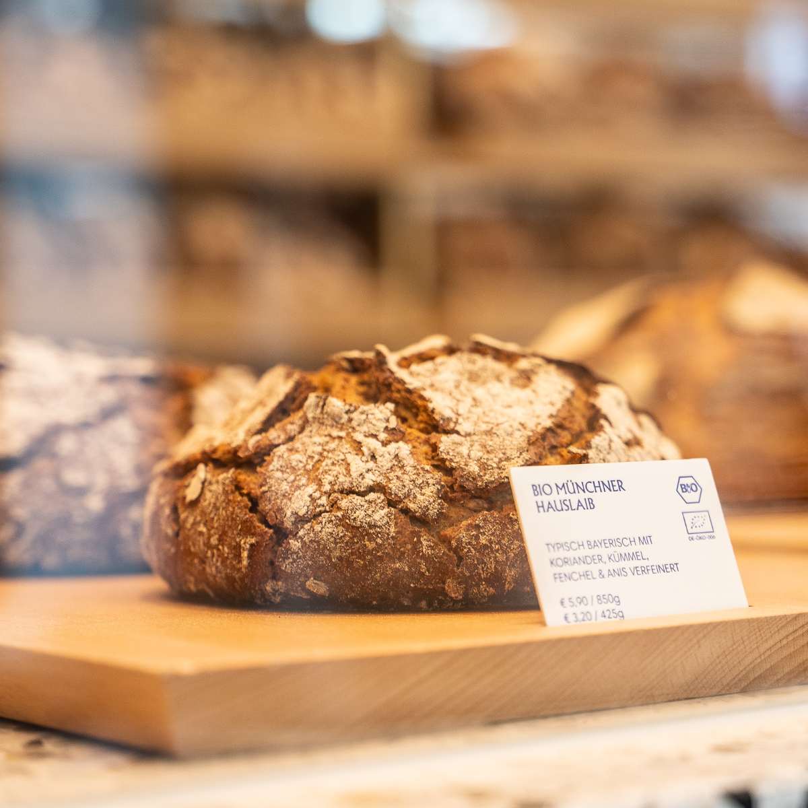
Base 1 · Mon 9 – Thu 12 Nov6 Mins Walk from Freiburg Hbf
06:17 AM Sleeper Arrival Advantage: Walk 6 minutes from Platform 3 at Freiburg Hbf to Mathildenstraße 14, drop your suitcases with the host at 06:35 AM, and walk straight across the Bismarckallee bridge into Freiburg Old Town for 08:00 specialty coffee at #27 Günter Coffee Store! Being 6 mins from Hbf also makes boarding the Baden-Baden train (Tue 10 Nov) and Titisee Höllentalbahn (Wed 11 Nov) effortless.
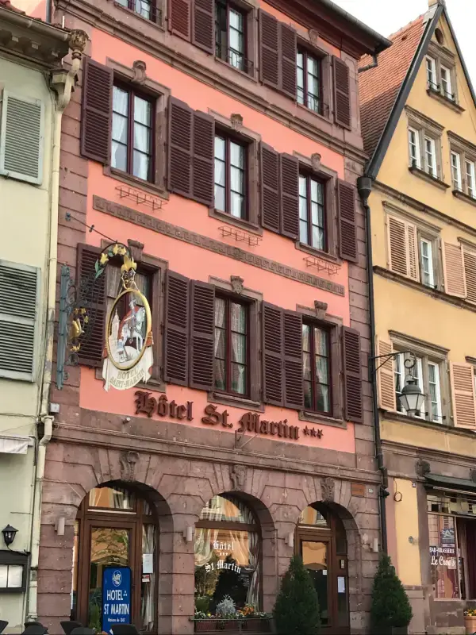
Base 2 · Thu 12 – Fri 13 Nov38 Grand'Rue, Colmar
Hôtel Saint-Martin (38 Grand'Rue, 68000 Colmar)
Located right on Colmar's historic Grand'Rue steps from the Koïfhus and Petite Venise canals, and ~15 mins walk (or 5 mins taxi) from Gare de Colmar for your Friday 13 Nov morning wine tour in Turckheim (#41–#43) and your 16:45 TGV INOUI 2362 to Strasbourg & Munich.
WHY WE MUST OMIT THE 5 SCHAUINSLAND PINS (#32–#36) IN MID-NOVEMBER:
You bookmarked 5 spots on Schauinsland mountain (#35 Schauinslandbahn cable car, #36 Die Bergstation, #32 Museums-Bergwerk silver mine, #33 Schniederlihof farmhouse museum, #34 Holzschlägermatte). Every November, the Schauinslandbahn cable car closes completely for mandatory annual autumn cable maintenance (Herbstrevision), and both the Museums-Bergwerk (#32) and Schniederlihof (#33) close for winter on 1 November! Replacing Schauinsland with your requested Lake Titisee excursion (via the 35-min Höllentalbahn train from Freiburg Hbf) saves you from a wasted trip to a closed cable car.
5-Day Black Forest & Alsace Schedule (With Exact Dates for Baden-Baden & Titisee)
Mon 9 Nov · Day 1
06:17 AM Arrival at Freiburg Hbf → Early Bag Drop at Mathildenstraße 14 → Freiburg Old Town Culinary, Coffee & Wine Loop:
• 06:17–07:00: Arrive Freiburg Hbf (Track 3) on Nightjet 408 → walk 6 mins to Mathildenstraße 14 to drop bags early with your Airbnb host.
• 08:00–10:30: Morning specialty coffee & breakfast at #27 Günter Coffee Store or #38 Kolben Kaffee, plus Freiburg's cathedral market (Münstermarkt).
• 12:00–14:30: Lunch at #31 Markthalle Freiburg (indoor food & champagne market) + Black Forest cake (Schwarzwälder Kirschtorte) at #39 Confiserie Gmeiner or #26 café hinterzimmer.
• 15:00–16:30: Official check-in & rest at Mathildenstraße 14.
• 16:45–21:00: Must-visit spirit tasting at #09 Freiburgs Finest Flagship Store (your note: "must go for a regional spirit called Zibärtle"), sunset Baden wine on the square at #11 Alte Wache - Haus der badischen Weine, and unfiltered organic Inselhopf lager & dinner at #10 Hausbrauerei Feierling.
Tue 10 Nov · Day 2
Scheduled Bathhouse Day — Day Trip to Baden-Baden (#06 Friedrichsbad & #40 Café König):
• 08:30–09:30: Walk 6 mins from Mathildenstraße 14 to Freiburg Hbf → take direct ICE (~45 mins) or RE7 (~75 mins) north to Baden-Baden + Bus 201 to Leopoldsplatz.
• 10:00–13:30: Experience the 3-hour, 17-station Roman-Irish thermal bath ritual inside Renaissance temple #06 Friedrichsbad (soap-brush massage, thermal steam domes, frescoe cupola pool; all towels/sheets provided).
• 14:00–16:00: Relax over Black Forest gateau, pralines & hot chocolate at grand 18th-century salon #40 Café König (10 mins walk from Friedrichsbad), then return by train to Freiburg for a relaxed evening near Mathildenstraße.
Wed 11 Nov · Day 3
Scheduled Alpine Lake Day — Lake Titisee (Höllentalbahn Scenic Train) + Freiburg Schlossberg & Wiehre:
• 09:10–09:48: Walk 6 mins to Freiburg Hbf and board the S1 / S10 Höllentalbahn through the dramatic Ravenna Gorge up into the High Black Forest to Lake Titisee (38 mins).
• 10:00–14:00: Stroll the pine-fringed shores of Lake Titisee, sample smoked Black Forest ham (Schwarzwälder Schinken) and Kirschwasser, or relax in the palm-lined thermal lagoon of Badeparadies Schwarzwald.
• 15:00–17:00: Return to Freiburg → ride the Schlossbergbahn funicular up to #37 Schloss-Café Freiburg for sunset views over the cathedral spire & Rhine valley, or stroll south across the Dreisam river to #30 Johanneskirche & #25 Bäckerei Bühler.
Thu 12 Nov · Day 4
Morning Coffee in Freiburg → 12:00 PM Airbnb Checkout → Cross the Rhine to Hôtel Saint-Martin Colmar:
• 09:00–11:30: Final Freiburg morning coffee & breakfast at #24 SAMS Café (or #38 Kolben Kaffee) → pack up & check out of Mathildenstraße 14 by 12:00 PM.
• 12:15–13:30: Walk 6 mins to Freiburg Hbf → take S1 to Breisach (25 mins) + cross-border Bus R26/68R026 across the Rhine directly into Colmar (~45 mins).
• 14:00–21:30: Check into Hôtel Saint-Martin (38 Grand'Rue, Colmar)! Spend the afternoon & evening wandering right outside your hotel door through Petite Venise, the Marché Couvert, and half-timbered Alsatian lanes over Crémant d'Alsace, tarte flambée & choucroute garnie.
Fri 13 Nov · Day 5
Confirmed 10:00 AM Biodynamic Wine Tour at #42 Domaine François Baur (Turckheim) + #41 Porte de Munster & #43 Cave de Turckheim → 16:45 TGV to Munich:
• 09:15–09:45 (Colmar → Turckheim): From Hôtel Saint-Martin (38 Grand'Rue), take a 12-min taxi/Uber directly to Turckheim (or walk to Gare de Colmar for the 7-min TER train to Turckheim station), entering the medieval walls through #41 Porte de Munster (Obertor) (just 100m from the winery!).
• 10:00–11:30 (CONFIRMED BOOKING `815D4A45A0E85F6C`):Visit & Tasting of Biodynamic Wines at #42 Domaine François Baur (3 Grand'Rue, 68230 Turckheim · 2 Adults · €24.00 via Winalist, charged Nov 3; free cancellation until Nov 6 at 10:00 AM). Taste biodynamic Alsace Grand Cru Brand Riesling, Pinot Gris & Crémant d'Alsace.
• 11:40–12:40: Optional second tasting 5 minutes' walk away at #43 CELLAR TURCKHEIM (Cave Vinicole de Turckheim).
• 13:00–16:00: Return to Colmar for a leisurely Alsatian lunch → collect your bags from Hôtel Saint-Martin (38 Grand'Rue) → arrive at Gare de Colmar by 16:20 (remember mandatory SNCF luggage tags!).
• 16:45–21:46: Board 16:45 TGV INOUI 2362 (Colmar → 17:12 Strasbourg, Coach 13, Seats 308 & 307) → 34-min transfer → 17:46 TGV INOUI 9577 (Strasbourg → 21:46 München Hbf, Coach 13 Lower Deck, Seats 304 & 305)!
Black Forest & Alsace Scorecard: What's Included (17 Spots) vs. What's Omitted (11 Pins)
Why omit all 5: The cable car (#35/#36) closes every November for mandatory annual cable maintenance (Herbstrevision), and both the silver mine (#32) and farmhouse museum (#33) are closed Nov 1 – April!
OMITTED #6
#07
Geroldsauer Mühle (Baden-Baden)
Why omit: Requires taking local Bus 204 out of Baden-Baden town into the woods; after 3.5 hours inside warm #06 Friedrichsbad + cake at #40 Café König, sunset (16:30) hits and it's better to take the train back to Freiburg.
OMITTED #7
#08
Weingut Faber (Outskirts of Freiburg-St. Georgen)
Why omit: Suburban bottle-pickup address ~4 km southwest of the center with limited tasting hours. You can taste 30+ top Baden wines right on the cathedral square at #11 Alte Wache instead!
OMITTED #8 & #9
#28 & #29
Hakuna Matata (#28) & Restaurant Pizzeria Grüner Baum (#29) in South Wiehre
Why omit: Casual suburban student spots (African fusion & a neighborhood pizzeria) south of the river. With only 3 nights in Freiburg, dine on authentic Baden/Black Forest cuisine at #10 Feierling and #31 Markthalle instead.
Day 1 · Friday, 13 November 2026
Colmar → Strasbourg → München Hbf & Timehouse Check-In
Leg 1: Colmar to Strasbourg on TGV INOUI 2362 (1st Class, Coach 13, Seats 308 & 307, Dual Side-by-Side). Booking NZM3KL (€11.50/person). Ensure physical ID & luggage tags are attached.
17:12 – 17:46
34-Minute Transfer at Strasbourg Gare Centrale: Pick up warm Alsatian snacks or dinner picnic supplies at the station concourse for the 4-hour ride across the Rhine.
17:46 – 21:46
Leg 2: Strasbourg to München Hbf on TGV INOUI 9577 (1st Class, Coach 13 Lower Deck, Priority Seats 304 & 305, €73.00/person). Free Wi-Fi via _SNCF_WIFI_INOUI.
21:46 – 22:25
München Hbf → Timehouse Munich (Leopoldstraße 204a, 80804 Munich): If on time, take a taxi from Hbf North Exit (Arnulfstraße, ~15 mins, ~€25) directly to Leopoldstraße 204a before reception closes at 22:30, or take S-Bahn to Marienplatz + U6 towards Garching-Forschungszentrum to Nordfriedhof (or Alte Heide) and use your pre-arranged 24/7 Keybox code.
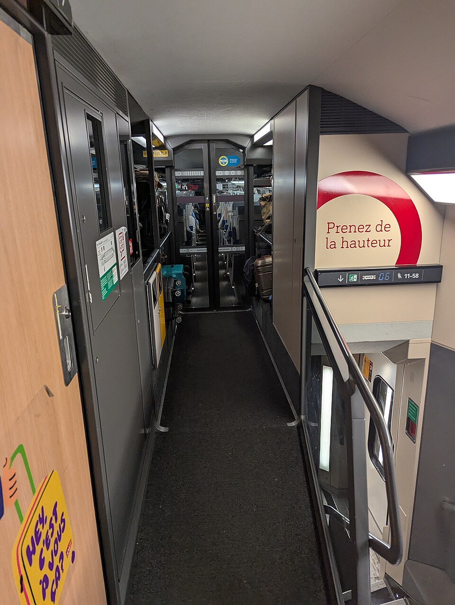
Timehouse Munich Serviced Apartment
Located at Leopoldstraße 204a, 80804 Munich in northern Schwabing. Features a full designer kitchen (dishwasher, stove, fridge) so you can store artisan sourdough bread, Bavarian cheeses, and Franconian wine.
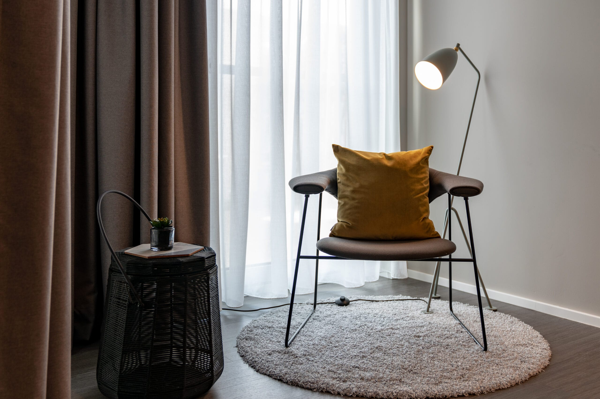
Day 2 · Saturday, 14 November 2026
Straight-Line U6 Route: Julius Brantner Croissants, Weißwurst Before Noon, Old Town & Saturday Camera/Antique Loop
Why this route works effortlessly: After arriving at 22:30 Friday night, you don't need to zig-zag across Munich at 08:00. Every stop today sits along a direct North-to-South U6 line (`Nordfriedhof` → `Universität` → `Marienplatz`), hitting the Saturday-only pastries and Saturday-open antique/camera stores before Sunday's retail shutdown (Sonntagsruhe).
09:15 – 10:05
Stop 1 — Julius Brantner Brothandwerk (Adalbertstraße 25) + Feinkost Olé (Georgenstraße 43, ★ Your Saved List #51): Take U6 from Nordfriedhof 4 stops south to Universität (8 mins). Why Saturday: Julius Brantner is closed Sun/Mon and only bakes his signature 54-layer hand-touriertes Butter Croissant, Sourdough Baguette & Saffron Cardamom Bullar on Saturdays! Pick up an organic Münchner Hauslaib sourdough loaf—then walk 4 minutes north to your saved pin Feinkost Olé (Georgenstraße 43) for Spanish wine, Manchego, and Ibérico ham to stock your Timehouse designer kitchen. (Optional Early-Bird Alternative: If you wake up at 08:00 and want an outdoor flea market first, Munich's big weekly Flohmarkt at Olympiapark or Daglfing runs Saturday 07:00–15:00).
10:30 – 11:45
Stop 2 — Traditional Weißwurstfrühstück at ★ Zum Franziskaner (Residenzstraße 9, Your Saved List #1) OR Schneider Bräuhaus (Im Tal 7) — Must Eat Before Noon / 12:00!: Ride U6 to Odeonsplatz / Marienplatz. Your saved pin Zum Franziskaner (`Note: 傳統德國嘢？`) serves a dedicated 10:00–11:30 Frühschoppen (€12.90 for 2 Weißwürste or Leberkäse + Brezn + house sweet mustard + 0.5L beer)—or visit Schneider Bräuhaus (Im Tal 7) for poached veal Weißwurst and wheat beer (Weißbier). Bavarian tradition dictates Weißwurst must never hear the church bells chime 12:00 noon!
11:55 – 14:00
Stop 3 — Marienplatz, 12:00 ★ Rathaus-Glockenspiel (List #17), Frauenkirche, Alter Peter & ★ Viktualienmarkt (List #56): Watch the 12:00 Neues Rathaus Glockenspiel jousting knights at Marienplatz, visit the twin-domed Frauenkirche, climb Alter Peter for the classic Old Town panorama, then explore your saved Viktualienmarkt (`Note: Farmer market`) and its central Viktualienmarkt Biergarten. Also stop by GARIBALDI Marienplatz (Burgstraße 2, 2 mins from Marienplatz—much closer than your #52 Petuelring warehouse pin!) for Italian bottles.
14:15 – 15:00
Stop 4 — ★ Schmalznudel - Café Frischhut (Prälat-Zistl-Straße 8, Your Saved List #2 `Note: 炸包`): Just 1 minute walk from Viktualienmarkt. Order piping-hot, hand-stretched Schmalznudel (Auszogne — traditional Bavarian fried pastry dusted with sugar) and coffee.
15:15 – 18:15
Stop 5 — Walkable Saturday Afternoon Camera & Antique Loop via ★ Karlsplatz (Stachus, List #18):
• 15:15 Leica Store & Leica Galerie Munich (Maffeistraße 4, open Sat 10:00–18:00): Browse flagship Leica rangefinders, pre-owned M/Q glass, and the free upstairs photo exhibition.
• 16:00 Kunst-Oase Antiques at Ottostraße 6 (7 mins walk to Karolinenplatz): Over 30 antique dealers under one roof selling porcelain, silver, and vintage optical curiosities.
• 16:50 ★ Karlsplatz (Stachus) (Your Saved List #18): Walk through the monumental Karlstor gate at Stachus directly onto Sonnenstraße.
• 17:10 Calumet Photographic / Foto-Video Sauter (Sonnenstraße 26, open Sat 10:00–19:00): Germany's largest merged camera & analog film superstore with inspected second-hand gear. (Note: Pro dealer Foto Dinkel nearby is closed Saturdays—saved for Monday 16 Nov!)
19:00 – 21:30
Stop 6 — Dinner at Reopened Haxnbauer (New Address: Im Tal 38!): Kuffler reopened the legendary 60-year-old Haxnbauer in a historic wood-paneled town hall at Im Tal 38 (2 mins from Marienplatz). Feast on 24-hour spiced-brine roasted pork/veal knuckle (Schweinshaxe), Käsespätzle, and caramelized Kaiserschmarrn.
Day 3 · Sunday, 15 November 2026 (Must-Do #1)
Full-Day Alpine Excursion to Neuschwanstein Castle
Breakfast at Timehouse Designer Kitchen + U6 to Hbf: Enjoy yesterday's Julius Brantner sourdough bread in your apartment kitchen. Because today is Sunday (weekend), your Bayern-Ticket (€44 for 2 adults in 2nd class) is valid from 00:00 midnight (on weekdays Monday–Friday it is only valid from 09:00!). CRITICAL: Write both passenger names (Tak Hin Lee, Yun Yu Tang) in ballpoint pen / ink on paper tickets and carry passports!
07:52 – 09:55
Regional Train (BRB RB 68) München Hbf (Starnberger Flügelbahnhof, Tracks 27–36) → Füssen: ~2 hours direct through Upper Bavarian foothills into the Allgäu Alps (or 08:40 train with 4-min cross-platform transfer at Buchloe).
10:00 – 10:15
RVA Bus 73 or Bus 78 from Füssen Bahnhof → Hohenschwangau: Fully covered by your Bayern-Ticket! (Ignore your old 2012 Bus_78.pdf — buses wait directly outside Füssen station timed to every train arrival).
10:30 – 15:30
Neuschwanstein Castle (Winter Hours: 10:00 – 16:00): Book your timed English guided tour slot (~11:30–12:30) weeks in advance at shop.ticket-center-hohenschwangau.de. Walk up (~35–40 mins) or take the horse carriage / shuttle bus (weather permitting; Marienbrücke & shuttle bus close if icy/snowy). Note: bulky rucksacks are not allowed inside the castle.
16:05 – 18:30
Sunset Return to Munich (~16:30 Sunset) & Sunday Wine Dinner: Catch Bus 78/73 back to Füssen and the regional train back to München Hbf. Dine at Weinhaus Neuner (Herzogspitalstr. 8, verified open Sundays 12:00–24:00 all winter!) or in Schwabing around Münchner Freiheit.
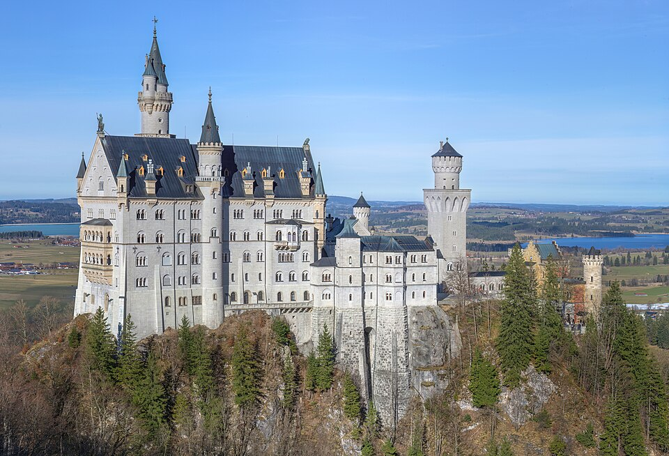
Neuschwanstein Winter Survival Notes
From 16 October to 27 March, Neuschwanstein Castle winter hours are 10:00 to 16:00 (Ticket Center 08:00–15:30). Tours are strictly timed (30 mins inside); latecomers are denied entry. Wear grip-soled shoes and thermal layers for the Alpine gorge breeze.
Day 4 · Monday, 16 November 2026 (Must-Do #2)
Dachau Concentration Camp Memorial Site, Foto Dinkel (Weekday Pro Shop) & Augustiner Wooden-Barrel Beer Hall
Transit to Dachau (Zone M-1): Buy an MVV Zone M-1 Gruppen-Tageskarte (€21.20 for 2 adults). Take U6 to Marienplatz, then S2 (towards Dachau/Petershausen) to Dachau Bahnhof (~20 mins), then Bus 726 (towards Saubachsiedlung) directly to KZ-Gedenkstätte (~10 mins, all covered by Zone M-1).
10:30 – 14:15
Dachau Concentration Camp Memorial Site (Open Daily 09:00 – 17:00, Mondays Included!): Unlike many German museums, Dachau is open every day from 09:00 to 17:00 (former crematorium closes 16:30). Free admission. Join the official 11:00 English Guided Tour (2.5 hrs, €4/person at the Visitor Center) or rent the audio guide (€4.50). Dress warmly—the roll-call square (Appellplatz) is completely exposed to November wind.
15:00 – 16:15
Foto Dinkel (Landwehrstraße 6 — Open Mon–Fri 09:00–17:30, Closed Sat): Take S2 from Dachau straight back to Hauptbahnhof (20 mins) and walk 5 minutes to Foto Dinkel. Browse Munich's oldest professional camera store (since 1924) for second-hand lenses, analog film, and accessories.
17:00 – 21:00
Authentic Westend Beer Hall Crawl — ★ Augustiner Bräustuben (Landsberger Str. 19, List #54) & ★ Augustiner Bürgerheim (Bergmannstr. 33, List #23): Both of your saved Westend Augustiner pins sit 7 minutes' walk apart! Start at Augustiner Bräustuben (Landsberger Str. 19, Hackerbrücke) for gravity-poured Augustiner Edelstoff from pitched wooden barrels (Holzfass) and Obatzda, or walk 600m west to your saved gem Augustiner Bürgerheim (Bergmannstr. 33, an 1899 Art Nouveau neighborhood Wirtshaus with zero tourists, famous for Münchner Schnitzel with mustard-horseradish crust and wooden-barrel Helles).
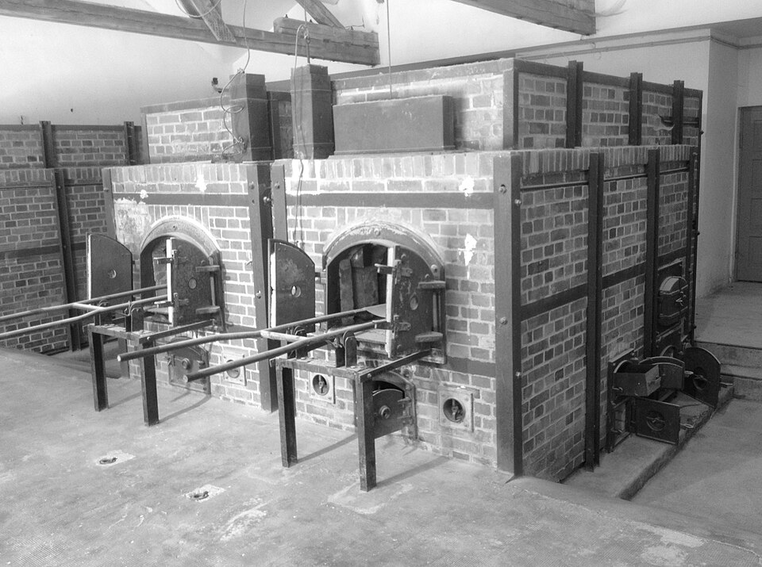
Why Monday 16 Nov is Geographically Seamless
Dachau (S2), Foto Dinkel (Hbf), and Augustiner Bräustuben (Hackerbrücke) all sit on the exact same West-Side S2 rail corridor! You never waste time crossing town twice.
Odeonsplatz, ★ Hofgarten (Your Saved List #16), Englischer Garten, Eisbachwelle Surfers & Chinesischer Turm: Take U6 from Nordfriedhof straight to Odeonsplatz (11 mins). Stroll through your saved Renaissance Hofgarten arcades (`List #16`), watch year-round river surfers ride the standing wave at Eisbachwelle (Prinzregentenstraße), then walk to the wooden pagoda at Chinesischer Turm in the Englischer Garten.
13:00 – 15:30
Museum #1 — Munich Residenz (Antiquarium & Schatzkammer / Treasury): Explore Germany's largest city palace right at Odeonsplatz. Focus on the breathtaking 66-meter Renaissance Antiquarium hall and the dazzling royal jewels of the Schatzkammer (Treasury).
16:00 – 19:00
Christmas Village in the Kaiserhof of the Residenz (Weihnachtsdorf im Kaiserhof der Residenz): Opens 16 November 2026 and runs daily 11:00 – 21:00 (free entry, Odeonsplatz entrance). Step straight out of the Residenz Museum into the palace courtyard at dusk (~16:30 sunset) as the lights glow! Sip mulled wine (Glühwein) and homemade Eierpunsch from collectible mugs (remember the Pfand mug deposit!), and browse Alpine woodcarvers. (Flexible backup/swap option: can also visit on 16 Nov or 18 Nov evening!)
19:15 – 21:45
Wine Trail Dinner — Pfälzer Residenz Weinstube & Weinhaus Neuner: Right inside the Residenz arches, Pfälzer Residenz Weinstube (Residenzstr. 1) pours Palatinate Rieslings; then walk 8 minutes to historic Weinhaus Neuner (Herzogspitalstraße 8, Munich's oldest wine tavern from 1452) to taste dry Franken Silvaner poured from the iconic flat-bellied Bocksbeutel bottle.
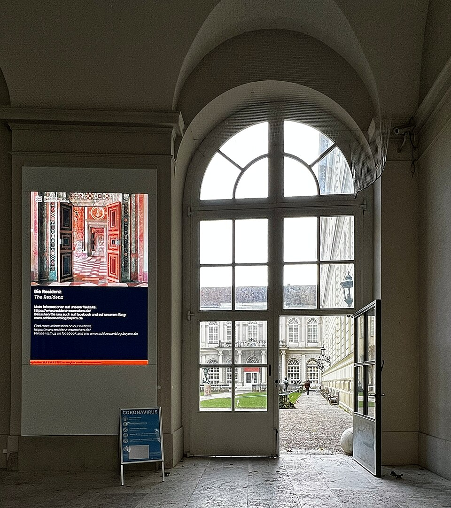
Weihnachtsdorf im Kaiserhof der Residenz
Verified 2026 dates: 16.11.2026 – 22.12.2026, open daily 11:00 – 21:00. Sheltered inside the four wings of the Kaiserhof courtyard, making it far warmer and less windy than open-square markets.
Day 6 · Wednesday, 18 November 2026
Dompierre Bakery, Deutsches Museum Optics/Photo, Modern Local Neighborhoods & Farewell Feast
French-Bavarian Bakery Morning — Boulangerie Dompierre (Türkenstraße 21, Maxvorstadt): Start with flaky French-butter croissants and sourdough baguettes at Dompierre in Maxvorstadt.
10:30 – 13:00
Museum #2 — Deutsches Museum (Classical Optics + Photography and Film Exhibitions): Situated on Museumsinsel on the Isar River. Keep strictly to your 1–2 museum cap by visiting the renovated Classical Optics and Photography and Film permanent exhibitions.
13:15 – 17:45
Authentic Modern Local Life — Haidhausen, Glockenbachviertel & Alte Utting: Walk across the Isar to Haidhausen (the "French Quarter" around cosy Wiener Platz with its small beer garden and independent boutiques), wander through trendy Glockenbachviertel (design studios, specialty coffee, natural wine at Bar Mural on Hotterstraße 12), and visit Alte Utting (open Wed from 16:00) — a retired excursion steamship perched atop a railway bridge in Sendling converted into a beloved local hangout with street food and craft beer!
18:30 – 21:30
Farewell Evening — Hofbräuhaus Schwemme Brass Band + Final Glühwein Swap: Step into the historic vaulted ground-floor Schwemme at Hofbräuhaus am Platzl to hear the oompah brass band, or revisit the Residenz Kaiserhof Christmas Village (open until 21:00 on 18 Nov) before packing at Timehouse.
Day 7 · Thursday, 19 November 2026 (Departure)
Express 25-Min Transfer from Schwabing to Munich Airport (MUC) for 10:00 AM Flight
Check Out of Timehouse Munich (Leopoldstraße 204a): Reception opens at 06:30 (or drop keys in the express check-out box if leaving at 06:20). Walk ~6 minutes to the München Schwabing / Nordfriedhof Lufthansa Express Bus stop (Ungererstraße / Schenkendorfstraße).
06:33 or 06:53
Lufthansa Express Bus from Schwabing / Nordfriedhof → Munich Airport (MUC): Departs every 20 minutes (06:13, 06:33, 06:53, 07:13). Takes just 25 minutes non-stop to MUC Terminal 2 / Terminal 1 (€12.50 online / €13.50 from driver; 2 suitcases + 1 carry-on free per person). Far faster than taking the U6 into town + 45-min S1/S8 S-Bahn!
07:15 – 10:00
Arrive at Munich Airport (MUC) by 07:18: Plenty of time for VAT tax-refund customs stamps (Zoll), baggage drop, security, and boarding your 10:00 AM flight.
★ Your "Trip 2026" Google Maps List Audit (Munich & Bavaria)
We extracted all 66 pins from your shared Google Maps list (https://maps.app.goo.gl/y8QgvKNcuU69sV5q7): 20 in Berlin, 23 in Freiburg/Black Forest, 5 in Baden-Baden/Alsace, 3 in Kraków, and 15 in Munich & Bavaria. Here is the honest breakdown of all 15 Munich/Bavaria pins—what is already locked in, what we integrated/upgraded, and which 3 to omit (and why):
# in List
Your Saved Google Maps Pin & Note
Verdict
How It Fits (or Why to Omit / Upgrade)
#02
Schmalznudel - Café Frischhut (Prälat-Zistl-Str. 8) Your Note: 炸包
Already Locked In (Sat 14 Nov 14:15)
10/10 essential Munich institution right next to Viktualienmarkt. Order hot hand-stretched Schmalznudel (Auszogne) fried to order.
#17
Rathaus-Glockenspiel (Marienplatz)
Already Locked In (Sat 14 Nov 12:00)
Timed for the 12:00 noon chime right after your morning Weißwurstfrühstück.
#56
Viktualienmarkt (Viktualienmarkt 3) Your Note: Farmer market
Already Locked In (Sat 14 Nov 12:30)
Must-visit on Saturday (closed Sunday!). Gourmet food stalls + central rotating-tap beer garden.
#54
Augustiner Bräustuben (Landsberger Str. 19)
Already Locked In (Mon 16 Nov 17:00)
Munich's best value local brewery taproom pouring Edelstoff & Helles from wooden barrels (Holzfass).
#58
Munich Residence (Residenz) Your Note: Xmas market 16/11-22/12
Already Locked In (Tue 17 Nov 13:00 & 16:00)
Covers both Museum #1 (Antiquarium & Treasury) and your must-do Weihnachtsdorf im Kaiserhof der Residenz.
#62
Neuschwanstein Castle (Hohenschwangau)
Already Locked In (Sun 15 Nov Full Day)
Full-day Sunday Alpine trip via Bayern-Ticket (€44 for 2).
#01
Zum Franziskaner (Residenzstraße 9) Your Note: 傳統德國嘢？
Integrated! (Sat 14 Nov 10:30 or Tue 17 Nov)
Yes—classic upscale-traditional Bavarian Wirtshaus! Famous for its house-made sweet mustard, Leberkäse, and 10:00–11:30 Frühschoppen (€12.90 for 2 Weißwürste + Brezn + 0.5L beer). Co-featured alongside Schneider Bräuhaus on Sat 14 Nov morning (and sits 1 min from Residenz/Leica Store!).
Fantastic local pick! An 1899 Art Nouveau neighborhood Wirtshaus in Westend, only 7 mins walk (600m) from Augustiner Bräustuben (#54)! Zero tourists, wooden-barrel Augustiner beer, and famous for Münchner Schnitzel (mustard-horseradish crust). Do both back-to-back on Mon 16 Nov evening!
#16
Hofgarten (Odeonsplatz)
Integrated! (Tue 17 Nov 09:45)
Renaissance Italianate garden & Diana Pavilion right next to the Residenz. You walk directly through it from U6 Odeonsplatz to the Eisbachwelle surfers on Tue 17 Nov morning.
#18
Karlsplatz (Stachus)
Integrated! (Sat 14 Nov 16:50)
Grand square & medieval Karlstor gate. Sits directly on your Saturday afternoon walk between Kunst-Oase Ottostraße and Calumet / Foto-Video Sauter on Sonnenstraße.
Tiny, passionate Spanish wine & Ibérico tapas/deli shop in Maxvorstadt—just 4 minutes' walk north of Julius Brantner Brothandwerk! Pop in right after buying your Saturday sourdough to pick up Spanish wine & Manchego for your Timehouse kitchen.
GARIBALDI is Munich's premier Italian wine & cheese merchant. However, the Frohschammerstraße 14 (Petuelring) pin is their industrial warehouse office. Instead, visit GARIBALDI Marienplatz (Burgstraße 2, 2 mins from Marienplatz) on Sat 14 Nov or GARIBALDI Maxvorstadt (Schellingstraße 60) right on your walking route!
#53
Hofbräu am Oberwiesenfeld (Hildeboldstraße 23)
Omit (Redundant & Out of the Way)
This is a modern, residential-block neighborhood restaurant in Schwabing-West without historic architecture. Between Augustiner Bräustuben, Augustiner Bürgerheim, Zum Franziskaner, Schneider Bräuhaus, and Hofbräuhaus am Platzl, your beer hall lineup is 10x stronger.
#55
Königssee (Berchtesgaden, 83471 Schönau)
Omit (Winter Schedule Trap + 6-Hr Round Trip)
Königssee requires ~3 hours each way (train to Berchtesgaden + Bus 841). In mid-November (winter timetable), the electric boats stop at St. Bartholomä and DO NOT sail to the famous Obersee / Fischunkelalm (closed mid-Oct to April), and sunset at 16:30 leaves the deep fjord in shadow by 14:30. With Neuschwanstein on 15 Nov and Dachau on 16 Nov, a 3rd long day trip would wipe out your Munich city time.
Charming medieval walled town in a meteorite crater, but takes 2+ hours each way via Donauwörth, and in mid-November most tower/wall walks have short winter hours. Keep your 3 full city days for Munich!
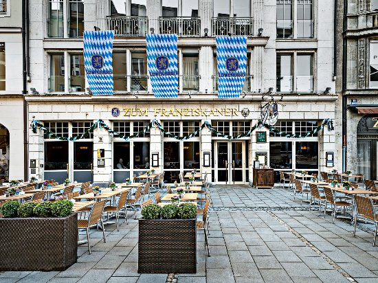
Your List #01Residenzstraße 9
Zum Franziskaner („傳統德國嘢？“)
Right across from the Residenz & 1 minute from Leica Store Maffeistraße! Famous for its 10:00–11:30 Frühschoppen (€12.90 for 2 Weißwürste or warm Leberkäse, pretzel, house sweet mustard & 0.5L Spaten/Franziskaner beer), plus roast duck and Bavarian classics all day.
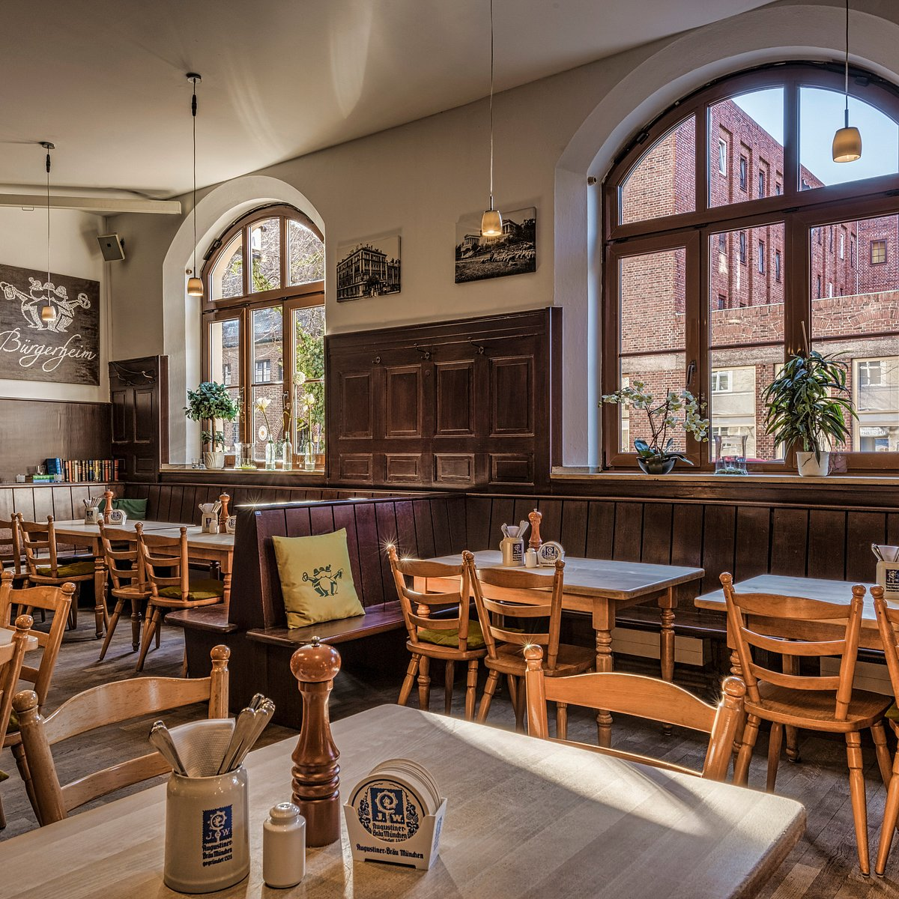
Your List #23Local Gem in Westend
Augustiner Bürgerheim (Bergmannstr. 33)
Built in 1899 in Munich's Westend, just 600m west of Augustiner Bräustuben (#54). Dark wood paneling, Art Nouveau windows, wooden-barrel Augustiner beer, and legendary Münchner Schnitzel (pork or chicken breaded with a mustard-horseradish crust).
Perfect for your Timehouse apartment kitchen! Grab Spanish Rioja, Priorat & jamón at Feinkost Olé (4 mins from Julius Brantner on Sat morning), and Italian Barolo, Franciacorta & truffle pecorino at GARIBALDI Marienplatz (Burgstr. 2, 2 mins from Marienplatz).
Bavarian Delicacies & November Beer Garden / Beer Hall Guide
In mid-November (2°C–8°C), outdoor chestnut-tree beer gardens still serve beer at sunny midday (like Viktualienmarkt Biergarten & Chinesischer Turm), while evening dining moves inside wood-paneled historic Bräustuben where beer is tapped directly from wooden barrels (Holzfass).
Must-Try Local Bavarian Delicacies
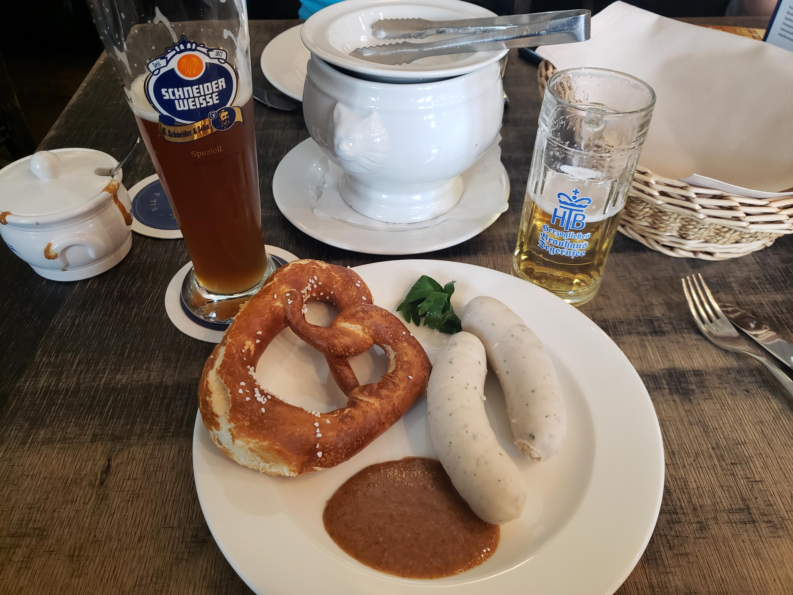
Morning RitualEat Before 12:00 Noon!
Weißwurstfrühstück (White Veal Sausage Breakfast)
Minced veal and pork back bacon seasoned with parsley, lemon, and mace. Served in hot water—never boiled—and strictly eaten before noon (12:00). Peel or slice lengthwise (Zuzeln is optional!), dip in Händlmaier sweet mustard, and pair with a fresh Brezn and Weißbier at Schneider Bräuhaus (Im Tal 7) or Augustiner Bräustuben (where 1 pair of Weißwürste costs just €2.00 during the 10:00–13:00 Zwickel Frühschoppen!).
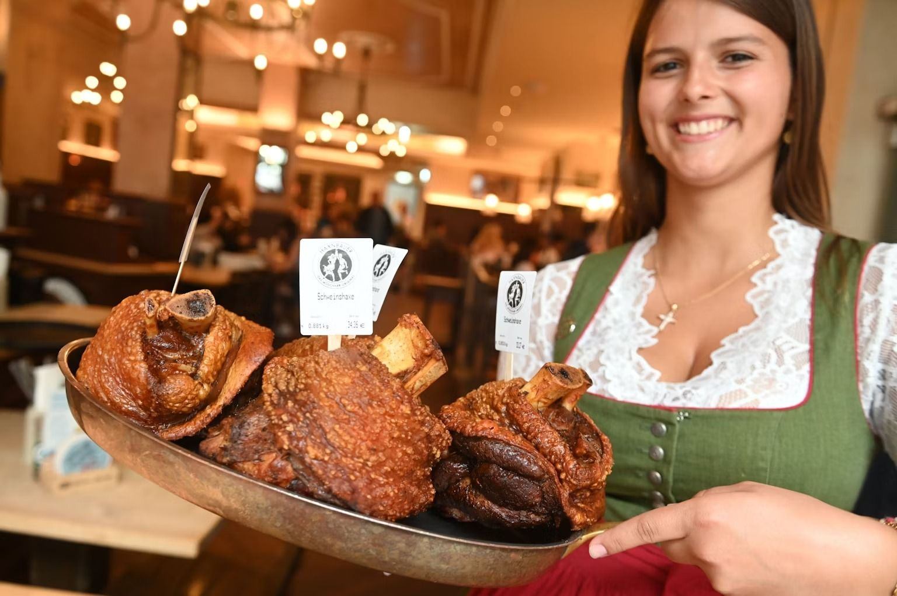
Dinner ClassicNew Address: Im Tal 38
Schweinshaxe & Krustenbraten at Haxnbauer (Im Tal 38)
Slow-roasted pork knuckle marinated 24 hours in spiced brine with crackling blistered skin (Schweinshaxe) or dark-beer-basted pork shoulder (Krustenbraten), served with elastic grated-potato dumplings (Kartoffelknödel) and warm cabbage salad. Head to Kuffler's reopened Haxnbauer at Im Tal 38 (reopened in a historic 250-seat oak-floored Wirtshaus after moving from Sparkassenstraße) or Augustiner Bräustuben.
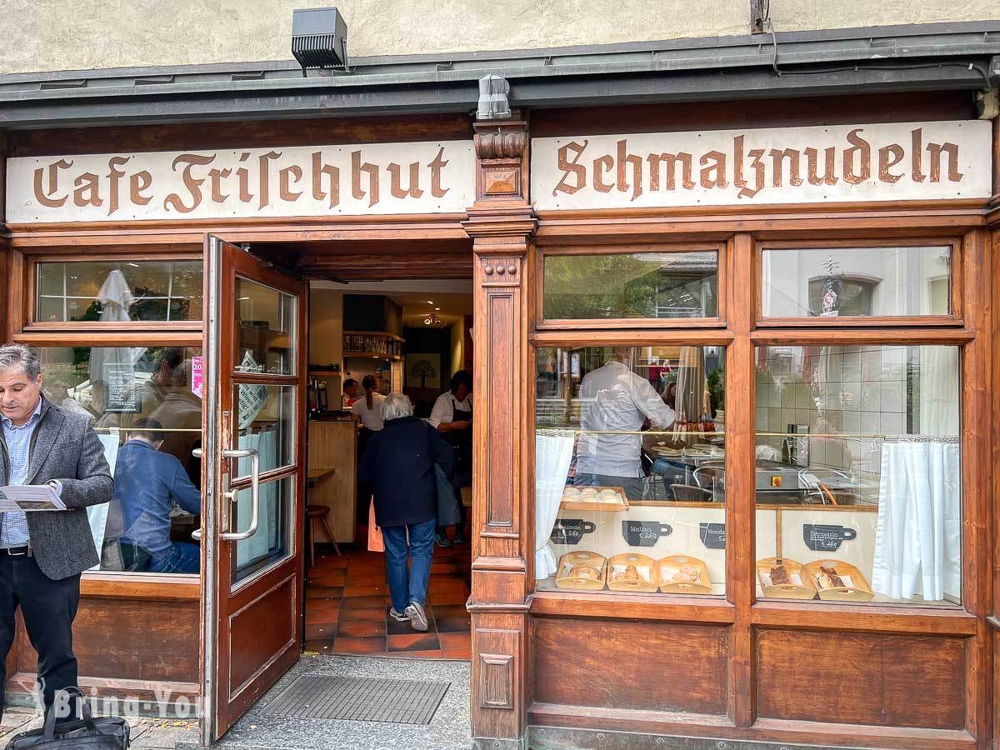
Pastry Icon
Schmalznudel (Auszogne) at Café Frischhut
Hand-pulled yeast dough fried in clarified butter until paper-thin in the center with a puffy golden rim, dusted with sugar. Head to legendary Café Frischhut (Bäckerbrüder, Prälat-Zistl-Str. 8) by Viktualienmarkt.
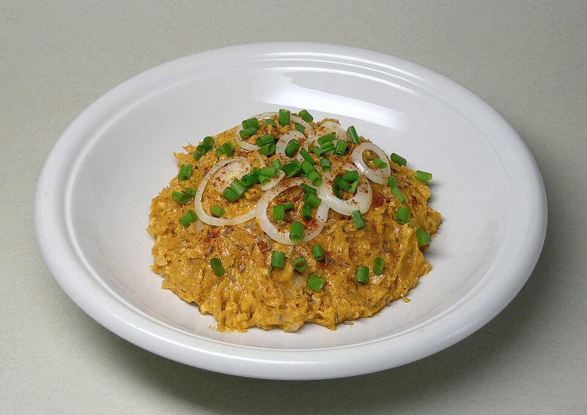
Beer Garden Staple
Obatzda & Giant Brezn
Ripe Camembert and Brie mashed with butter, sweet paprika, caraway seeds, and a splash of wheat beer, topped with raw red onion rings and chives. The ultimate companion to a 1-liter Maß of beer.
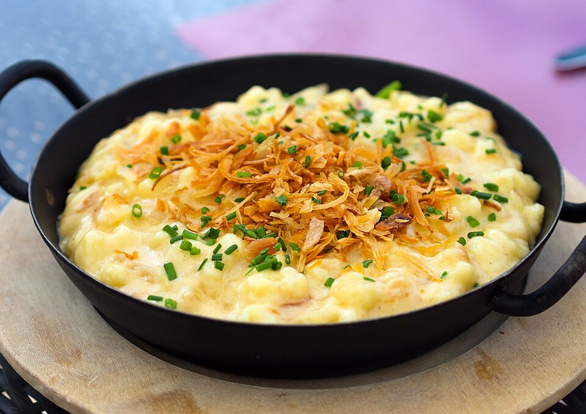
Alpine Comfort
Allgäuer Käsespätzle
Hand-scraped soft egg noodles layered with pungent Bergkäse and Emmental cheese inside a hot skillet, crowned with crispy fried onions (Röstzwiebeln).
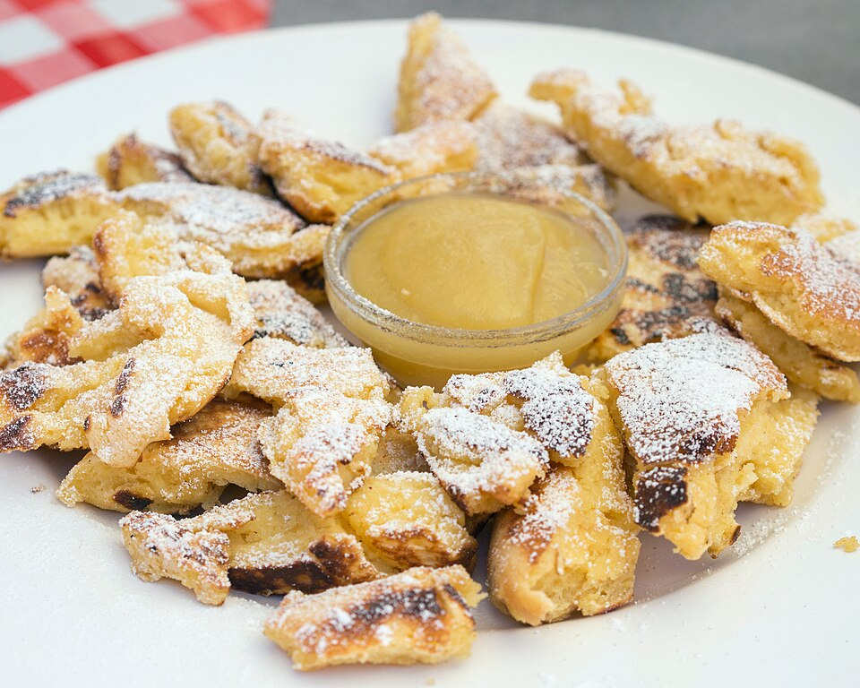
Dessert
Kaiserschmarrn
Fluffy, rum-raisin souffle pancake torn into bite-sized pieces and caramelized in butter with powdered sugar, served with roasted plum compote (Zwetschgenröster) or apple sauce.
Beer Halls & Beer Gardens (Indoor & Outdoor November Guide)
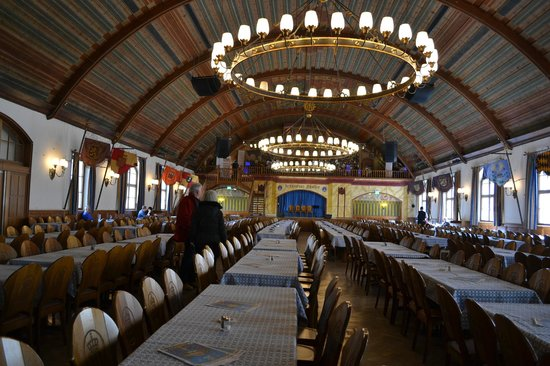
Local #1 PickHolzfass Wooden Barrel
Augustiner Bräustuben (Landsberger Str. 19) & Augustiner-Keller
Attached directly to the 1328 Augustiner brewery. Unlike tourist-heavy halls, Augustiner Bräustuben is packed with Munich locals, students, and workers. Order Augustiner Edelstoff or Helles tapped by gravity from genuine pitched wooden barrels (Holzfass)—low carbonation, silky mouthfeel, and local prices (~€3.33–€4.30 per 0.5L).
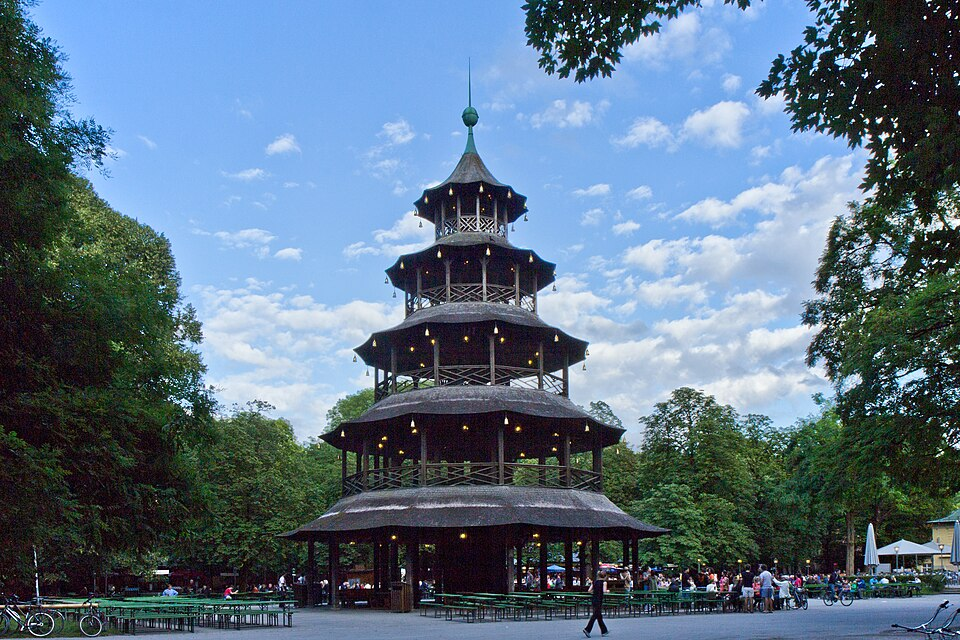
Outdoor Beer Garden
Chinesischer Turm & Viktualienmarkt Biergarten
Want the classic outdoor chestnut-tree beer garden experience in November? On dry days, both the central Viktualienmarkt Biergarten (rotating Munich Big 6 taps) and Chinesischer Turm in the Englischer Garten serve outdoor benches (plus cozy indoor Wirtshaus dining).
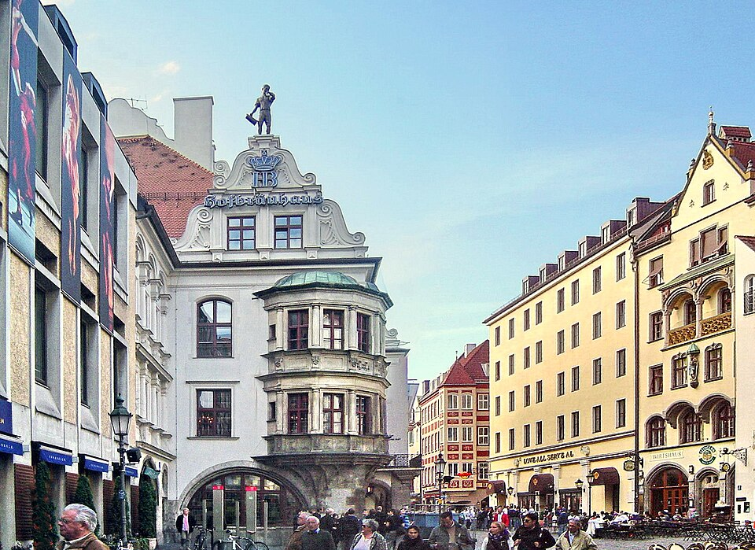
Historic Must-See
Hofbräuhaus am Platzl & Schneider Bräuhaus (Im Tal 7)
Walk through the vaulted ground-floor Schwemme of Hofbräuhaus am Platzl to admire the painted ceilings, regulars' locked ceramic steins, and live brass band—then walk 2 minutes to Schneider Bräuhaus (Im Tal 7) for complex amber wheat beers (TAP6 Unser Aventinus wheat doppelbock) and authentic Kronfleischküche specialties.
Filter by your four personal passions below, or search by name/street:
Bakery TrailBrantner Croissants: Sat Only!
Julius Brantner Brothandwerk, Café Frischhut & Boulangerie Dompierre
1) Julius Brantner Brothandwerk (Adalbertstr. 25, Maxvorstadt & Kreuzstr. 1, Open Tue–Sat, Closed Sun/Mon): Munich's rockstar organic sourdough baker—48-hour fermented Münchner Hauslaib & Brothandwerk 25. Crucial Baking Schedule: His 54-layer hand-touriertes Butter Croissant, Sourdough Baguette & Saffron Cardamom Bullar are baked ONLY on Fridays & Saturdays (visit Sat 14 Nov at 09:15!). Tuesdays feature Blue Poppy Seed Rolls with Brown Butter; Wednesdays feature Cinnamon Cardamom Rolls. 2) Café Frischhut (Prälat-Zistl-Str. 8): Famous since 1973 for hot Schmalznudel, Rohrnudeln, and Krapfen. 3) Boulangerie Dompierre (Türkenstr. 21, Maxvorstadt): Authentic French-butter laminated croissants and baguettes.
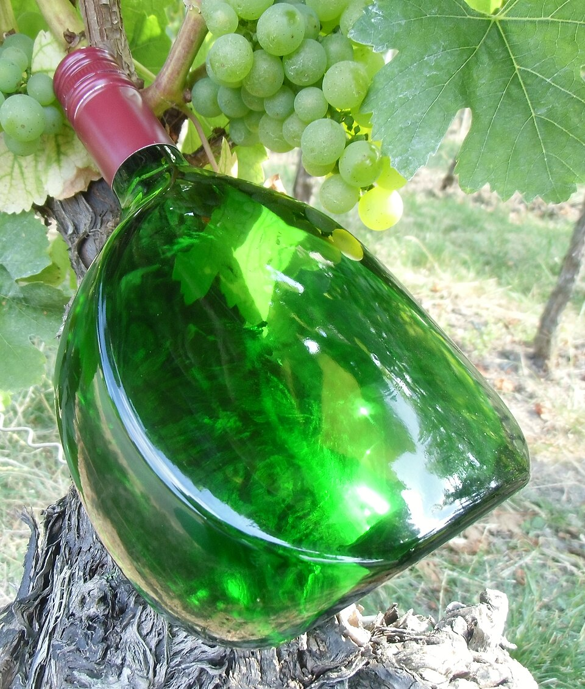
Wine TrailFranken & Pfalz
Weinhaus Neuner, Pfälzer Residenz Weinstube & Bar Mural
Bavaria produces world-class white wine in northern Franconia (Franken)! Order bone-dry, mineral Franken Silvaner poured from the iconic flat-bellied Bocksbeutel bottle. 1) Weinhaus Neuner (Herzogspitalstr. 8, Open Mon–Sun 12:00–24:00 including Sundays in winter!): Munich's oldest wine tavern (since 1452), candlelit wood vaults. 2) Pfälzer Residenz Weinstube (Residenzstr. 1): Inside the palace; 50+ Palatinate Rieslings & Spätburgunders by the glass. 3) Bar Mural (Hotterstr. 12): Modern natural/low-intervention wine bar adored by young Munich locals.
1) Leica Store & Leica Galerie Munich (Maffeistraße 4, Open Mon–Sat 10:00–18:00): Flagship boutique plus free fine-art photography gallery (Leica Galerie) and curated pre-owned Leica M/Q bodies & M-mount glass. 2) Calumet Photographic / Foto-Video Sauter (Sonnenstr. 26, Open Mon–Sat 10:00–19:00): Calumet merged with historic Foto-Video Sauter at Sonnenstraße 26—huge selection of analog film, darkroom supplies, and inspected used cameras. 3) Foto Dinkel (Landwehrstr. 6, Open Mon–Fri 09:00–17:30, CLOSED SATURDAYS): Professional institution since 1924 near Hauptbahnhof with second-hand trade-in counters. (Scheduled on Monday 16 Nov at 15:00 right after Dachau!)
1) Kunst-Oase at Ottostraße 6 (near Karolinenplatz, open Mon–Sat): Over 30 specialist antique dealers under one roof selling Meissen/Nymphenburg porcelain, silver, Biedermeier pieces, and vintage optical curiosities. 2) Saturday Flohmarkt Olympiapark or Daglfing (07:00–15:00 every Saturday): Open-air treasure hunting at Olympiapark (Parkharfe) or Daglfing trotting track for analog cameras, brass lenses, and vintage tin signs.
Strictly Curated 2-Museum Cap, First-Timer Must-Sees & Modern Local Life
Per your preference for at most one or two museums, we skip art-gallery marathon fatigue and focus exclusively on two high-impact experiences tailored to history, royal antiques, and optical/camera engineering—paired with Munich's liveliest modern residential quarters.
Right beside the Kaiserhof Christmas Village. Skip the 130-room mega-route and spend 90 focused minutes admiring the cavernous 1568 Antiquarium (the largest Renaissance hall north of the Alps, lined with classical busts) and the Schatzkammer (Treasury) housing Wittelsbach crowns, rock-crystal vessels, and Renaissance goldsmith masterpieces.
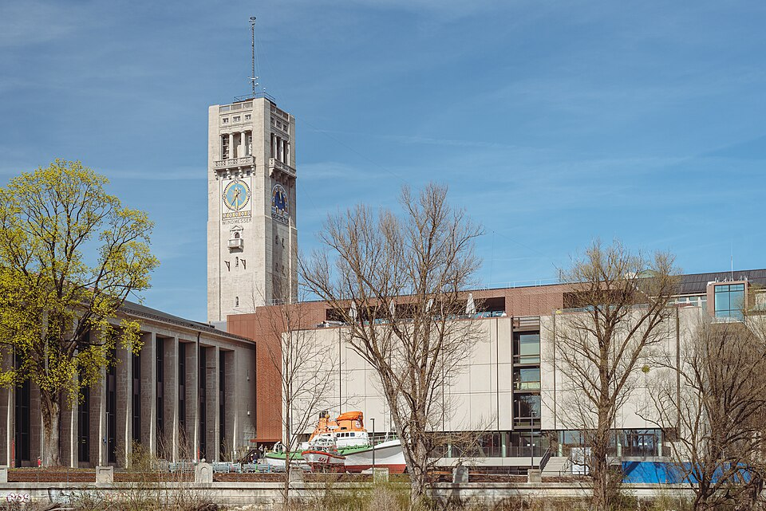
Museum #2Optics & Photography
Deutsches Museum (Classical Optics & Photography/Film Section) + Leica Galerie
On Museumsinsel, head straight to the renovated Classical Optics and Photography and Film exhibits inside the Deutsches Museum to see historic German Carl Zeiss/Leitz lenses, early daguerreotype cameras, and precision instruments—complemented by the free Leica Galerie at Maffeistraße 4.
First-Timer Must-Sees & Authentic Modern Local Neighborhoods
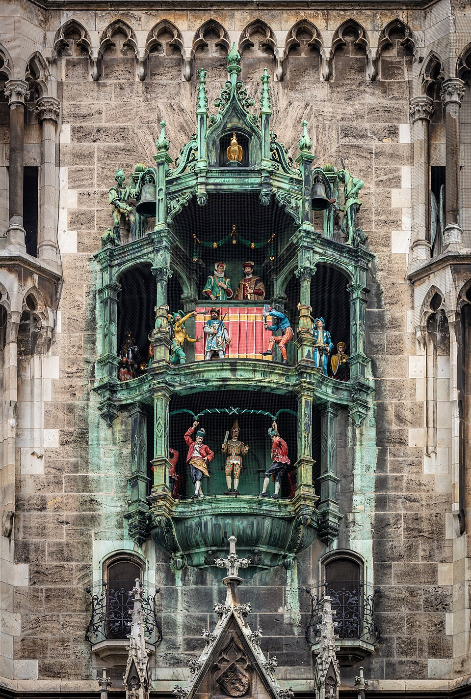
Must-See Core
Marienplatz, Neues Rathaus Glockenspiel, Frauenkirche & Alter Peter
Munich's historic heart: watch the 11:00 or 12:00 Neues Rathaus Glockenspiel, step inside the brick Gothic Frauenkirche to see the "Devil's Footprint", and climb 306 steps up Alter Peter for panoramic city views.
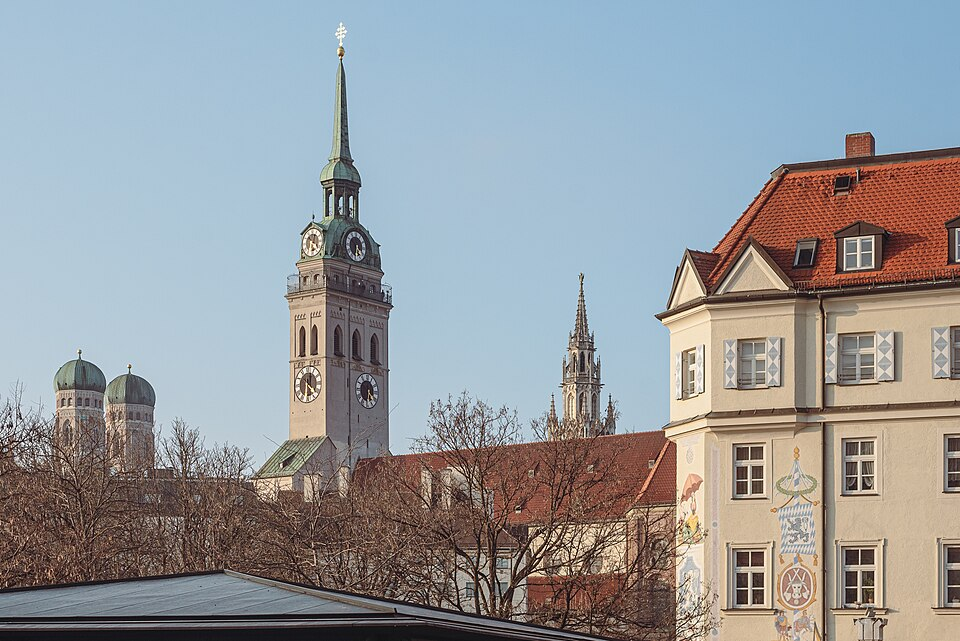
Must-See Market
Viktualienmarkt & Odeonsplatz
Sample artisan cheeses, wild game sausages, and honey at Viktualienmarkt, then stroll north up Theatinerstraße to grand Italianate Odeonsplatz and the yellow Theatinerkirche.
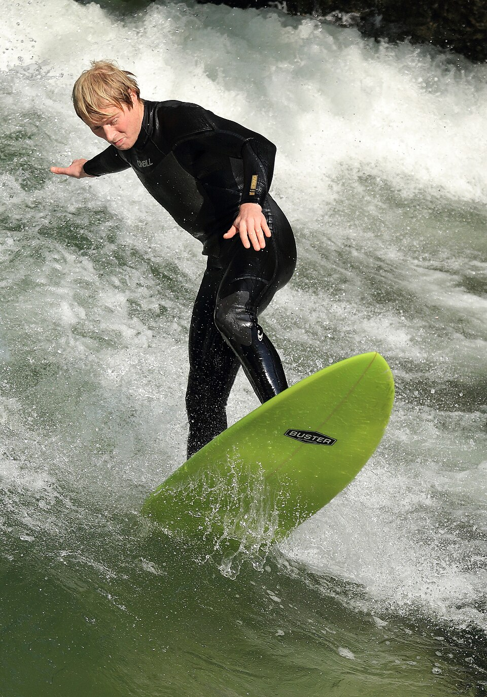
Park & Surfers
Englischer Garten & Eisbachwelle
Even in chilly November, wetsuit-clad locals queue to surf the standing river wave at Eisbachwelle at the southern entrance of the Englischer Garten.
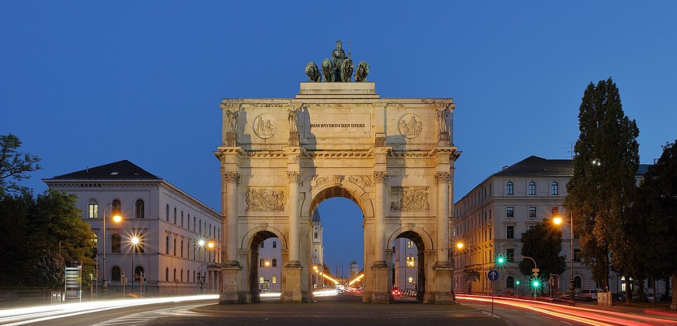
Your Home Base
Schwabing & Maxvorstadt
Your apartment at Timehouse sits in northern Schwabing. Explore Art Nouveau streets around Münchner Freiheit & Hohenzollernstraße, and walk south past the Siegestor into university-quarter Maxvorstadt for indie bookshops, specialty coffee, and bakeries.
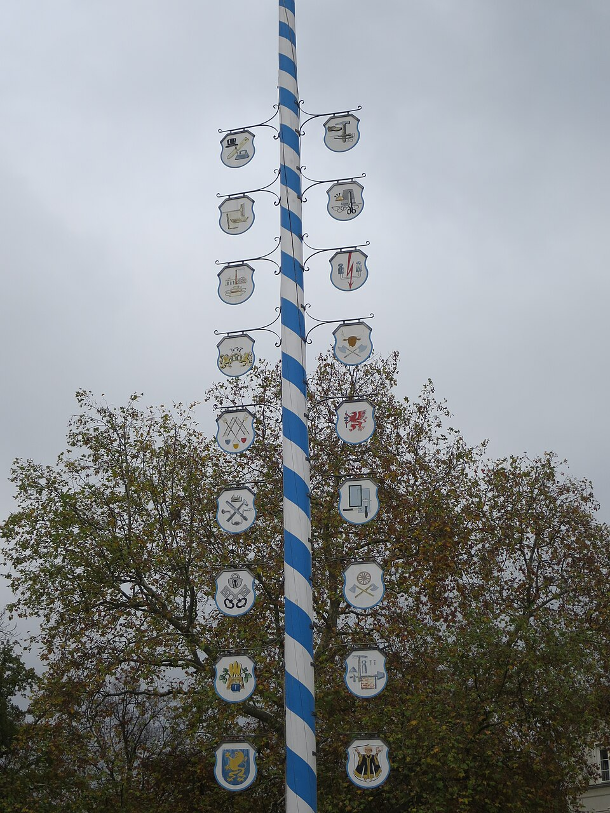
Local Quarter
Haidhausen (Wiener Platz) & Glockenbachviertel
Experience how affluent young Münchners actually live: village-like Wiener Platz in Haidhausen East of the Isar, and lively aperitivo bars, bakeries, and concept stores around Gärtnerplatz in Glockenbachviertel.
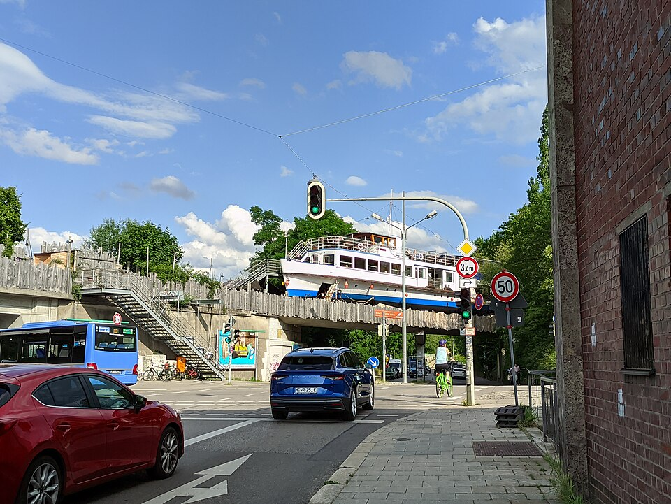
Quirky Modern Munich
Alte Utting (Sendling) & Werksviertel
A retired Ammersee passenger ship craned onto an active railway bridge in Sendling! Locals gather on deck and in the heated engine room at Alte Utting for craft beer, concerts, and street food—a world away from touristy postcard clichés.
Bavarian Transport & Troublesome Ticketing Survival Guide (2026 Tariff)
Unlike Hong Kong's Octopus card (where gates open and close automatically), German transit runs on an Honor System (Proof-of-Payment) with no turnstiles—and plainclothes inspectors (Fahrkartenkontrolleure) issue an instant €60 fine if your paper ticket isn't stamped or your name isn't written in ink.
Ticket Type (2026 Official Tariff)
Zones Covered
2026 Price
When to Use on Your Trip
MVV Single Trip (Einzelfahrkarte)
Zone M (Munich City)
€4.20 per adult
Only if taking 1 single ride. Already by 3 rides, a Group Day Ticket is cheaper!
MVV Single Day Ticket (Single-Tageskarte)
Zone M
€10.10 (1 adult)
Not needed when travelling together as a pair—buy the Group Day Ticket instead!
MVV Group Day Ticket (Gruppen-Tageskarte Zone M)
Zone M (Includes Timehouse U6 Nordfriedhof/Alte Heide & entire city)
€19.70 total (covers 2 to 5 adults until 06:00 next morning)
Use on Sat 14, Tue 17 & Wed 18 Nov! Works out to €9.85/person for unlimited U-Bahn, S-Bahn, Tram & Bus.
MVV Group Day Ticket (Gruppen-Tageskarte Zone M-1)
Zone M-1 (Munich City + Dachau Memorial)
€21.20 total (covers 2 to 5 adults)
Use on Mon 16 Nov for Dachau! Covers U6 + S2 to Dachau Bahnhof + Bus 726 to KZ-Gedenkstätte + all Munich city rides all day.
MVV Stripe Ticket (Streifenkarte)
10 Stripes (Zone M = 2 stripes per adult ride)
€18.70 (10 stripes = €3.74 per Zone M ride)
Trap Alert: For 2 adults in Zone M, you must fold the card to stamp stripe #4 (2 stripes × 2 people = 4 stripes) in the blue/red Entwerter validation box, and you must NEVER tear the card apart!
Regional Day Ticket for Bavaria (Bayern-Ticket)
All of Bavaria (Regional trains RE/RB + S-Bahn/U-Bahn/Trams + RVA Bus 73/78 to Neuschwanstein)
€44.00 total for 2 adults (2nd Class; €34 for 1st person + €10 for 2nd person)
Use on Sun 15 Nov for Neuschwanstein! Valid from 00:00 midnight on weekends (Sat/Sun) vs 09:00 on weekdays (Mon–Fri) until 03:00 next day.
Lufthansa Express Bus
München Schwabing / Nordfriedhof ↔ Munich Airport (MUC)
€12.50 online (€13.50 from driver)
Use on Thu 19 Nov morning (06:33 or 06:53)! 25 mins non-stop from Nordfriedhof to MUC Terminal 2.
€60 Fine Trap #1
The Entwerter Validation Box & Streifenkarte Rules
If you buy a paper ticket from a machine that says "Hier entwerten" (or a Streifenkarte at €18.70), you MUST stamp it inside the small blue/red Entwerter validation box at the top of the U-Bahn/S-Bahn platform stairs BEFORE boarding. Boarding with an unstamped paper ticket incurs an automatic €60 fine. Digital tickets bought in the MVGO / MVV-App or via MVVswipe (check-in swipe before boarding, check-out swipe after alighting) do not need stamping—note that MVVswipe places a temporary €10 hold and calculates the cheapest daily cap overnight, but requires check-in at surface level before entering the train.
€60 Fine Trap #2
Bayern-Ticket Rules: 09:00 Weekday vs 00:00 Weekend & Ink Name Rule
1) Time Lock: On weekdays (Mon–Fri), the Bayern-Ticket is only valid from 09:00 AM. Because you visit Neuschwanstein on Sunday 15 Nov (weekend), it is valid from 00:00 midnight so you can take the 07:52 train!
2) Mandatory Ballpoint Pen / Ink Name Writing: A paper Bayern-Ticket is invalid unless the full names of both passengers are written in ink / ballpoint pen on the ticket (digital DB Navigator tickets embed names at checkout). Carry physical passports.
3) Regional Trains Only: Valid on RB, RE, BRB, S-Bahn, U-Bahn, and Bus 73/78—never valid on white high-speed ICE, IC, or EC trains!
4) U3/U6 November 2026 Construction Alert: Phase 2 renovation works run until 27 Nov 2026 on the southern U3/U6 section (Goetheplatz/Poccistraße shuttle train). Your northern U6 ride between Nordfriedhof / Alte Heide, Odeonsplatz, and Marienplatz runs normally.
Hong Kong First-Timer to Germany: 10 Cultural & Practical Hiccups
Coming from Hong Kong's 24/7 Octopus/PayWave convenience and late-night dining, these are the biggest surprises in Bavaria:
1. Sunday Ruhetag Shutdown
Sunday (Sonntag / Ruhetag) Total Retail Shutdown
Unlike Hong Kong where malls boom on Sundays, German law enforces Sonntagsruhe (Sunday rest day / Ruhetag). Every supermarket (REWE, EDEKA, ALDI), pharmacy, department store, antique shop, and camera boutique is 100% closed on Sunday 15 Nov. Buy your Sunday breakfast/water on Saturday 14 Nov! (Restaurants, cafés, museums, and Neuschwanstein Castle remain open).
While hotels and big stores take Visa/Mastercard/Apple Pay, traditional bakeries (like Café Frischhut), Christmas market stalls, flea markets, and some beer halls still insist on cash (Bargeld). Always carry €100 in small notes and €0.50 / €1 / €2 coins—you need coins for Sanifair station/highway toilets (€1 entry gives you a €0.50–€1 voucher) and church/museum lockers.
3. Pfand Deposit System
Pfand on Christmas Mugs (Becher) & Supermarket Bottles (Flaschen)
At the Residenz Christmas Village, a €5 Glühwein costs ~€9–€10 upfront because of a €4–€5 Pfand (mug/cup deposit). You receive a small plastic token (Pfandmarke)—return both the ceramic mug and token to get your cash back! Similarly, supermarket water/beer bottles carry a €0.08–€0.25 Pfand bottle deposit; return empty bottles into the supermarket Leergutautomat machine for a cash-back receipt.
4. Water & Pretzel Basket
Stilles Wasser vs. Sprudelwasser & Paid Pretzel Baskets
If you ask for "water" in Germany, you will get aggressively carbonated sparkling water (Sprudelwasser / mit Kohlensäure) and no free tap water. Ask specifically for "Stilles Wasser" (still water)! Also, the pretzel basket (Brezenkorb) on beer hall tables is not free—servers count how many pretzels you eat (~€1.80–€2.50 each) and add them to your bill.
5. Beer Hall Etiquette
Stammtisch Reserved Signs, Shared Tables & Tipping by Rounding Up
In Bavarian beer halls, you seat yourself at long wooden communal tables—just ask "Ist hier noch frei?" (Is this seat free?). NEVER sit at a table marked with a wrought-iron or wooden "Stammtisch" sign—those are strictly reserved for lifelong local regulars! When paying, never leave cash on the table: tell the server the total including a 5%–10% tip by rounding up (Trinkgeld aufrunden)—e.g., if the bill is €36.80, hand them €40 and say "Vierzig, bitte" (Make it 40).
6. Street Rules & Weather
Jaywalking Fines, High-Speed Bike Lanes, 16:30 Sunset & Thermal Layering
1) Never Jaywalk on Red (Rotlicht): Even at 22:00 on an empty street, crossing against a red pedestrian Ampel brings angry scolding from locals (especially in front of children) and police fines.
2) Stay Off Red/Marked Bike Lanes (Radweg): Munich cyclists ride fast and silently on sidewalk-level cycle paths—never stop in a bike lane to take camera shots!
3) 16:30 Sunset & Thermal Layering: In mid-November, sunset is around 16:30 and temperatures drop to 0°C–7°C while indoor beer halls and trains are heated to 22°C. Dress in thermal layers (merino/Uniqlo Heattech base layer + fleece + wind/waterproof shell) so you can peel layers off indoors.